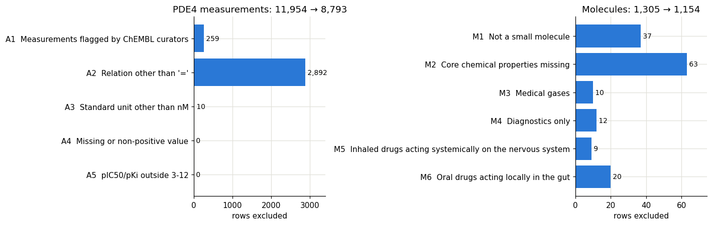
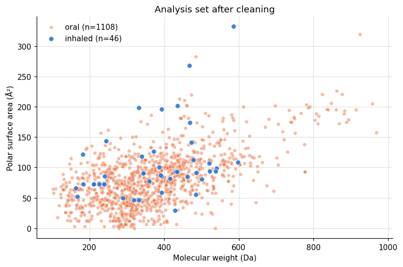
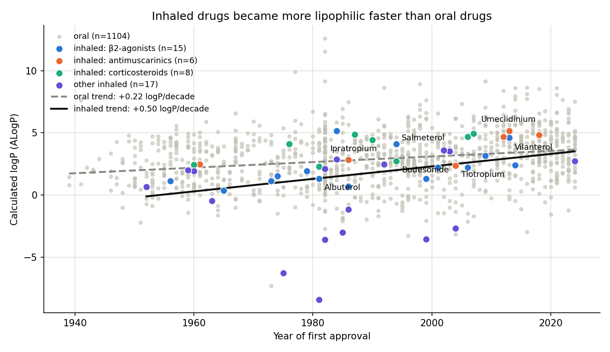
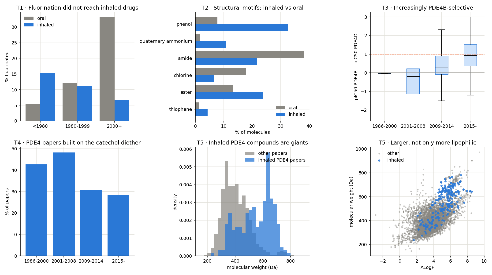

Is there a Rule of 5 for inhaled drugs?
Lipinski's rule of five tells chemists what an oral drug usually looks like. Inhaled drugs have the opposite job: they should stay in the lung, not reach the blood. This study uses public ChEMBL and FDA data, SQL and Python to describe what approved inhaled drugs look like, and how their chemistry has changed.
Problem statement
Drug discovery teams filter candidate molecules with property rules. The best known, Lipinski's rule of five, describes drugs that are absorbed from the gut: molecular weight up to 500 Da, logP up to 5, at most 5 hydrogen-bond donors and 10 acceptors.
An inhaled drug for asthma or COPD works under different constraints. It is delivered straight to the lung, should act there for many hours, and the part that reaches the blood or is swallowed should do as little as possible. A filter built for oral absorption may reject good inhaled candidates or let through poor ones. There is no widely agreed public equivalent for inhalation.
For a respiratory R&D team, a property profile of successful inhaled drugs is a practical screening tool: it helps decide which chemical series to pursue for inhalation, and it makes design choices explainable to project teams.
Questions
- Do approved inhaled drugs differ from oral drugs in their physicochemical properties, and does the rule of five capture the difference?
- Has the chemistry of inhaled drugs changed over time, and differently from oral drugs?
- Which structural features are typical of inhaled drugs?
- What do compounds designed for inhalation look like in a current target class, the PDE4 inhibitors used in COPD research?
Data
- ChEMBL 37 (EMBL-EBI): 4,225 approved drugs with calculated properties, names and ATC codes, plus 11,954 IC50/Ki measurements on human PDE4 for 7,352 compounds. Downloaded through the official API because the full dump (25 GB) did not fit on the machine.
- openFDA Drugs@FDA: 51,886 FDA products with dosage form and route of administration. ChEMBL has no "inhaled" flag, so the route comes from here.
- Every raw file is stored unchanged with its download time and SHA-256 hash, and the whole database rebuilds from two scripts.
FDA and ChEMBL share no identifier. Ingredient names were matched to ChEMBL names and synonyms (92.3% exact, 0.3% after removing salt words, 7.4% unmatched), and salts were mapped to their parent molecule so that properties are compared on the active molecule. The data dictionary documents every table and column.
Methods
From raw data to the analysis set
- StartParent molecules with at least one oral or inhaled FDA product1,305
- TransformSplit combined routes ("INHALATION, ORAL") and normalise case; inherit ATC codes from salts; make groups exclusive (inhaled takes precedence, 15 molecules flagged as also oral)The route fix alone adds an inhaled molecule that exact text matching missed.1,305
- M1-M2Remove non-small molecules and molecules without core properties−37 · −63
- M3-M4Remove medical gases (< 100 Da or ATC V03AN) and diagnostic-only agents−10 · −12
- M5Remove inhaled drugs acting on the nervous system (anaesthetics, loxapine, levodopa): they are inhaled to reach the bloodThe mirror rule M6 removes oral drugs acting only in the gut, designed not to be absorbed.−9
- M6Remove gut-local oral drugs (ATC A06/A07 only)−20
- ResultLung-targeted inhaled drugs and systemic oral drugs46 + 1,108

Statistics
- Group comparison: Mann-Whitney U tests (the properties are not normally distributed) with Holm correction for multiple testing, and the rank-biserial correlation r as effect size. With 46 inhaled drugs, effect sizes matter more than p-values.
- Sensitivity analysis: the comparison repeated without the 15 inhaled molecules that also have oral products.
- Multivariate view: principal component analysis on eight standardised descriptors.
- Time trends: Spearman correlation with year of first approval, bootstrap 95% confidence intervals, and a model with one intercept per respiratory class tested by shuffling years within class (permutation test).
- Structural motifs: RDKit substructure searches with Fisher exact tests, and a logistic model with a year × route interaction for fluorination.
- Verification: the browser statistics are checked against numpy, pandas and SciPy (40 automated checks), and the cleaning stops if a reference inhaled drug (albuterol, budesonide, fluticasone, formoterol, ipratropium, salmeterol, tiotropium) disappears.
Key queries
The analysis set lives in a SQLite database. These are the queries behind the main numbers; each one opens in the SQL workbench, where the chart and the statistics panel update with the result.
Results
Q1 · The rule of five does not separate inhaled from oral drugs; polarity and donors do
26.1% of inhaled and 22.8% of oral drugs break at least one of Lipinski's rules, and the number of violations does not differ (p = 0.77). The differences lie in specific properties:
| Property | Median inhaled | Median oral | Effect size r | p (Holm) |
|---|
Rank-biserial r from −1 to 1: bar to the righthigher in inhaled drugs, to the leftlower. Grey rows are not significant after correction.
Without the 15 molecules that also exist orally, the pattern holds or strengthens: H-bond donors r = +0.46, QED r = −0.42, PSA r = +0.32, aromatic rings r = −0.23. The lower logP of inhaled drugs does not survive (r = −0.10, p = 0.30).

A principal component analysis on eight descriptors (1,143 molecules, without the also-oral group) needs two components for 72.5% of the variance. PC1 (46.8%) is a size and polarity axis (molecular weight, PSA, H-bond acceptors and donors load positively, QED negatively); PC2 (25.7%) opposes lipophilicity and aromaticity to polarity. Inhaled drugs sit higher on PC1 (mean +1.26 vs −0.04, r = +0.44, p = 1.1 × 10⁻⁵) and lower on PC2 (−1.05 vs +0.03, r = −0.26, p = 0.009): larger and more polar, and less lipophilic for their size.
Q2 · Inhaled drugs became more lipophilic and flexible over time

- Year vs logP among inhaled drugs: Spearman ρ = +0.51 (95% CI 0.28 to 0.68); oral drugs ρ = +0.25.
- The trend holds inside each class: β2-agonists ρ = +0.66, antimuscarinics +0.77, corticosteroids +0.67. Adjusted for class: +0.43 logP and +1.1 rotatable bonds per decade (permutation p = 0.002 for both).
- From albuterol (1981, logP 1.3) to vilanterol and umeclidinium (2013, logP 4.6 and 5.1): the move from inhalers taken several times a day to once-daily products coincides with more lipophilic, more flexible molecules.
- Molecular weight grows for both routes at a similar rate, so size alone is a general trend in drug discovery, not an inhaled one.
Q3 · Structural signatures: permanent charge, no fluorine
- Permanent positive charge: quaternary ammonium groups are found in 10.9% of inhaled drugs vs 1.7% of oral drugs (odds ratio 7.0, Holm p = 0.017): ipratropium, tiotropium, aclidinium, umeclidinium, glycopyrronium. A permanent charge limits absorption into the blood.
- Fluorine: among drugs approved since 2000, 33% of oral drugs contain fluorine (136 of 411) but only 7% of inhaled drugs (1 of 15). The opposite time trends are significant (year × route interaction, p = 0.005). Fluorine is often added to slow metabolism; for an inhaled drug, fast clearance of the systemic fraction is an advantage.
Q4 · PDE4 inhibitors designed for inhalation are much larger

- Compounds from the seven PDE4 papers about inhaled administration have a median weight of 571 Da vs 393 Da in all other PDE4 papers, with 9 rotatable bonds vs 5 (r = +0.63; one median per paper, p = 0.002). Tanimilast (CHF6001), an inhaled PDE4 inhibitor in development for COPD, weighs 688 Da with ALogP 6.3, against 403 Da and 5.0 for oral roflumilast.
- Over the same years, PDE4 chemistry moved towards PDE4B over PDE4D selectivity (the PDE4D isoform is linked to nausea): median pIC50 difference from −0.20 (2001-2008) to +0.94 (from 2015). This is strong per compound but borderline per paper (p = 0.051).
- The classic catechol diether scaffold of rolipram and roflumilast fell from 48% to 28% of PDE4 papers (p = 0.003).
Conclusion
There is no simple rule of five for inhaled drugs, but there is a recognisable inhaled profile, and it is not the oral one.
Lipinski is the wrong filter for inhalation
Inhaled and oral drugs break the rule of five equally often. A screen built on it neither selects nor rejects inhaled candidates for the right reasons.
26.1% vs 22.8% with at least one violation, p = 0.77Approved inhaled drugs are more polar and less "drug-like"
More H-bond donors, higher polar surface area, fewer aromatic rings and lower QED, robust to removing drugs that also exist orally.
HBD r = +0.48, QED r = −0.33, PSA r = +0.26, aromatic rings r = −0.27 (all Holm p < 0.05)Modern inhaled design trades polarity for lipophilicity and size
Within each respiratory class, newer drugs are more lipophilic and flexible, and inhaled PDE4 programmes produce much larger molecules than oral ones. This fits a design goal of lung retention and long duration.
+0.43 logP per decade (p = 0.002); PDE4 inhaled papers 571 vs 393 DaSystemic safety is built into the structure
Permanent positive charges are seven times more common, and the fluorination wave that reshaped oral drugs did not reach inhaled ones.
Quaternary ammonium OR 7.0; fluorine 7% vs 33% since 2000What this means for a respiratory R&D team
- Do not use oral property filters for inhaled projects; describe the target profile on inhaled reference drugs instead.
- Treat lipophilicity, flexibility, permanent charge and metabolic lability as levers for lung retention and systemic clearance, to be tested against measured lung residence time.
- The open data and code make the profile easy to extend to new targets and to update with each ChEMBL release.
Limitations
- Small inhaled group: 46 drugs (35 without the also-oral group), so confidence intervals are wide. Results describe approved drugs, not a validated design rule.
- Calculated descriptors (ALogP, PSA) from ChEMBL, not measured values. The ChEMBL 37 API returns no ionisation descriptors, so charge is only captured by substructure searches.
- Routes come from US FDA products only. The year is the first approval of the molecule by any route.
- Some exclusion rules use ATC codes as a proxy for therapeutic intent; seven inhaled molecules have no ATC code and are kept without that filter.
- Associations, not causes: the link between lipophilicity and duration of action is a hypothesis here. The PDE4 selectivity trend is borderline at paper level, and inhaled PDE4 papers were identified from titles only.
Next steps
- Add dosing frequency from FDA labels to test whether lipophilicity predicts once-daily dosing.
- Build a simple, explainable inhalability score, check that reference inhaled drugs score high, and apply it to potent PDE4 inhibitors.
- Compute charge and ionisable groups with RDKit, and add EU (EMA) inhaled products.
- Audit a random sample of the FDA-ChEMBL name matching and split combination products.
The full list is on the backlog page; the pipeline is explained step by step in How it works.
Exploratory analysis of public data. ChEMBL data © EMBL-EBI, CC BY-SA 3.0; openFDA data from the US Food and Drug Administration. Numbers on this page come from the project database built on 21 October 2026 and from the scripts src/explore_trends.py and src/explore_chemistry.py.